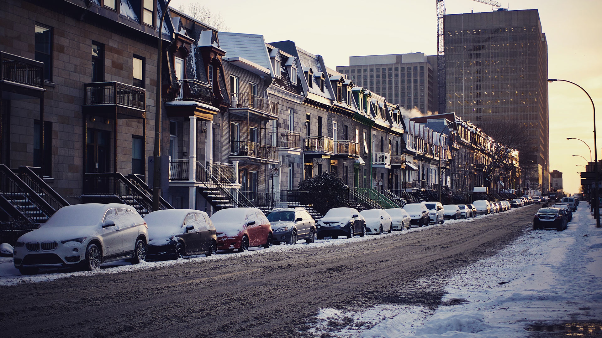
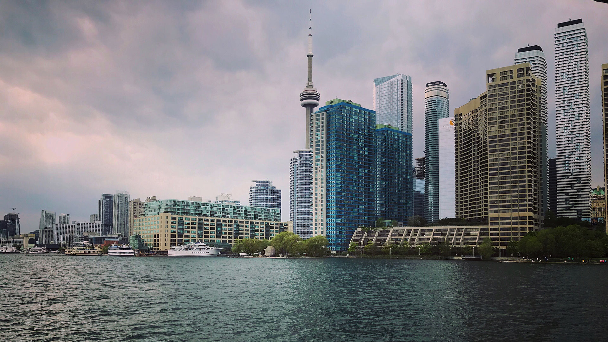
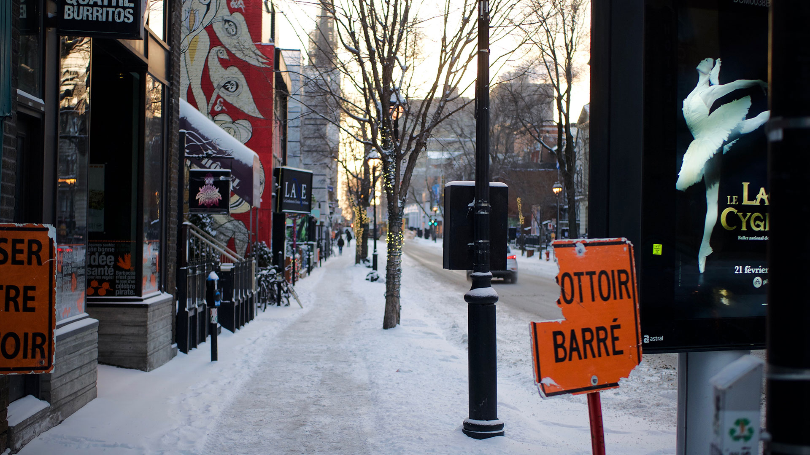
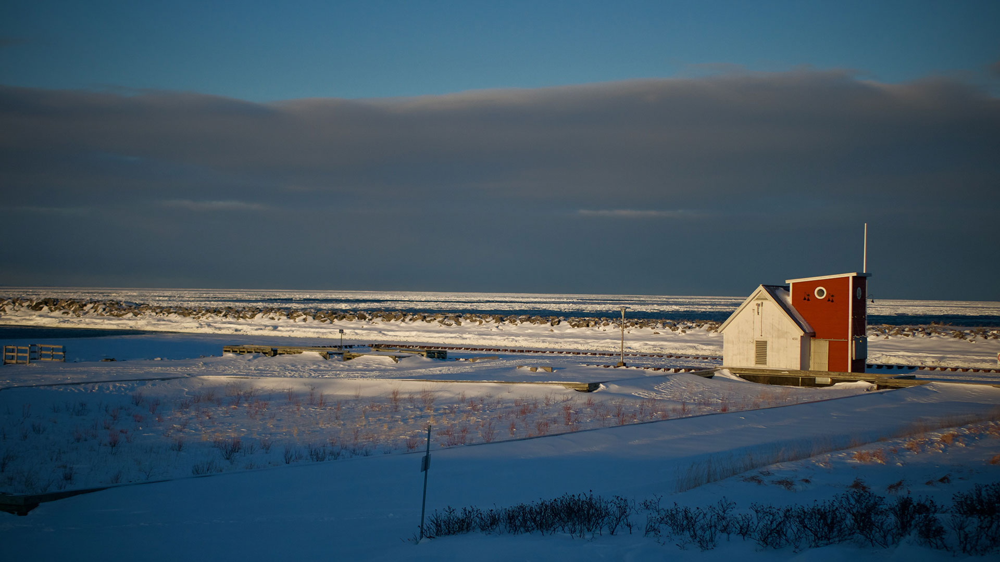
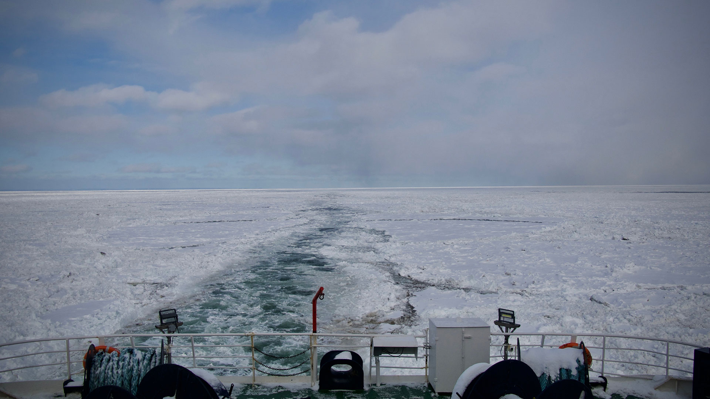
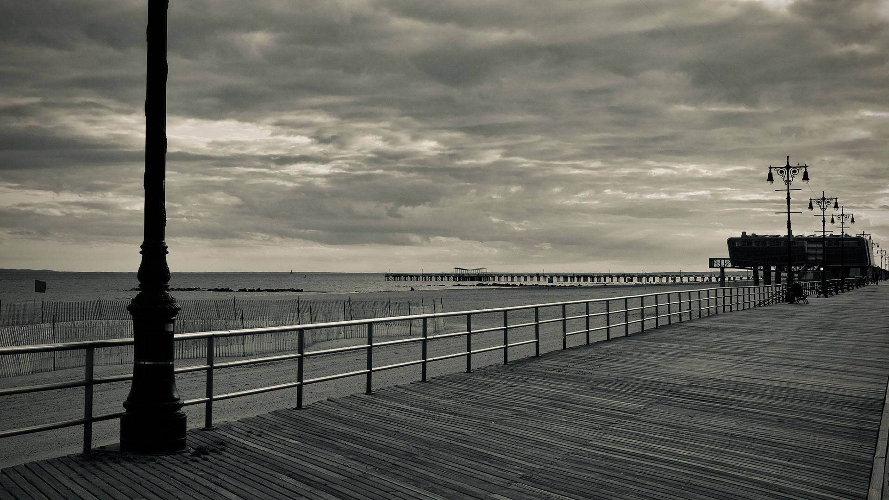
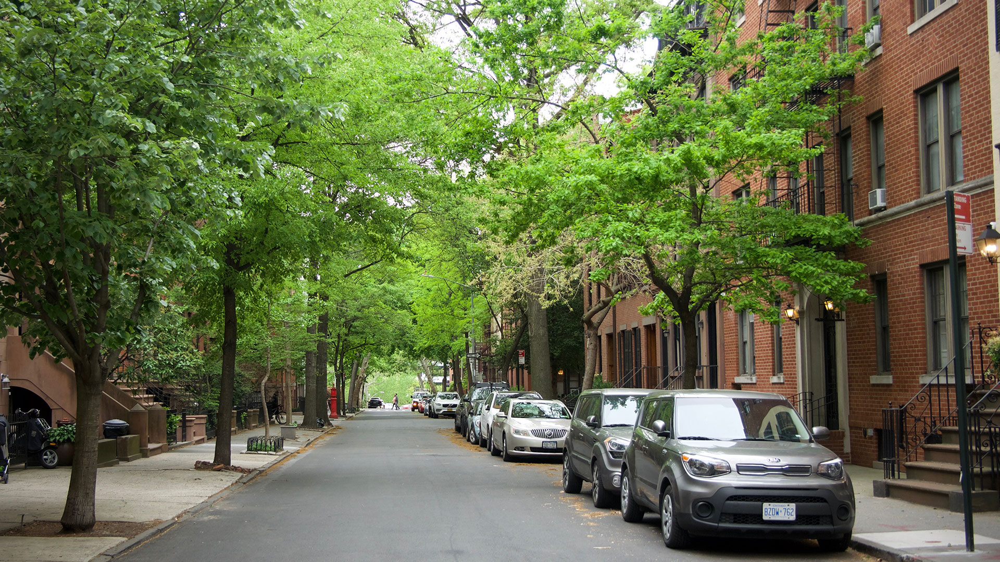

Je m’appelle Guillaume j’ai 21 ans et j’ai grandi dans un petit village lorrain. Au cours de ma vie j’ai pu découvrir plusieurs passions. A l’âge de 13 j’ai commencé a m’intéressé de près au monde de la web radio, et elle m’a suivi pendant toute mon adolescence, m’a fait grandir et prendre confiance en moi. Au début de cette année j’ai eu la chance de voyager pour mes études au Québec et au États-Unis, ça m’a ouvert aux gens, aux différences culturelles et à voire la vie et le monde qui nous entoure d’une façon différente. Grâce à ce voyage j’ai pu m’essayer à la photographie, un des seuls médias que je m’étais pas encore expérimenter.
Guillaume Marcel
Webdesigner
Mon parcours a débuté professionnellement avec la radio, où j’ai signé mon « premier emploi » à la sortie du bac avec un service civique de 9 mois. A la suite de ce service civique j’ai intégré un DUT MMI à Saint-Dié des Vosges pour développer mes compétences en audiovisuel, mais j’ai apprécié le côté « Internet » de la formation et pour cette raison j’ai décidé de poursuivre mon cursus dans le webdesign à Limoges pour penser et concevoir les interactions de demain.
Galerie Photo







